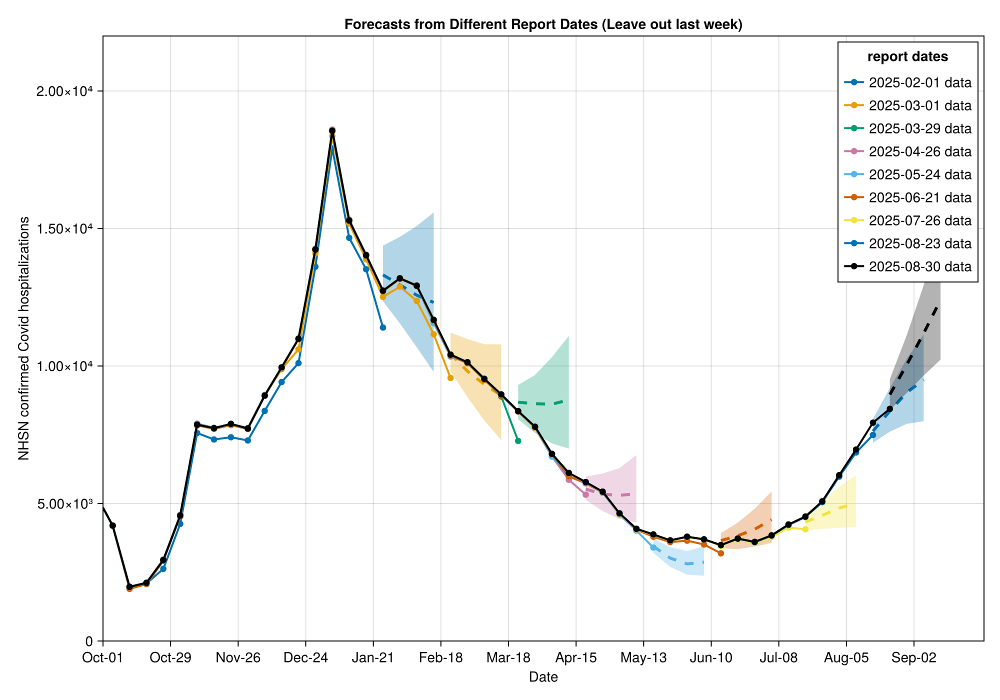
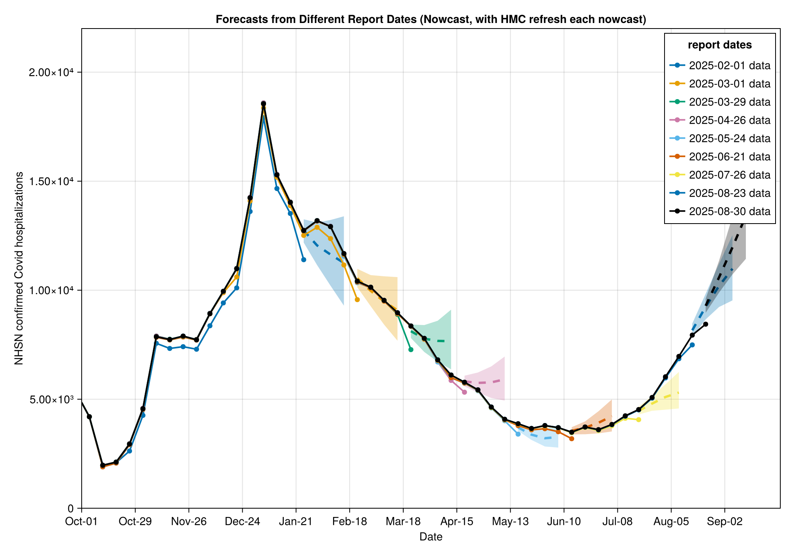

using MarkdownGetting Started with NowcastAutoGP
Combining nowcasting and AutoGP
CDC Center for Forecasting and Outbreak Analytics (CFA/CDC)
Introduction
This tutorial demonstrates how to use NowcastAutoGP for epidemiological forecasting - making forecasts of future disease activity despite reporting delays making the latest data unreliable. This is a common challenge in public health surveillance where case reports arrive with delays. In this tutorial, we will want to forecast future weekly hospital admissions with confirmed Covid diagnosis despite uncertainty around the eventual value of recent admissions. The reason for the uncertainty is that despite eventually having a record of severe cases arriving in a given week (we call this the reference date), at any given reporting week (we call this the report date) recent reference dates will not have complete data.
What is AutoGP?
AutoGP.jl is a Julia package for automatic Gaussian process model discovery. Rather than fitting a single GP with a fixed kernel, AutoGP maintains an ensemble of GP models (called particles), each with a different kernel structure (e.g. periodic, linear, radial basis, or compositions thereof). AutoGP combines three inference techniques:
- Sequential Monte Carlo (SMC) steps as new data is ingested, which resample the particle ensemble of GP models to focus on promising kernel structures. New data can be provided to SMC either in batches (
AutoGPhas built-in support for scheduling data ingestion in batches) or incrementally (e.g. for nowcasting). - Markov chain Monte Carlo (MCMC) steps that propose new kernel structures for each particle, allowing the ensemble to explore a rich space of possible kernels.
- Hamiltonian Monte Carlo (HMC) steps that tune the continuous hyperparameters of each particle's kernel, improving fit and increasing diversity.
The result is a weighted mixture of GPs that captures uncertainty over both kernel structure and hyperparameters, aiming to avoid manual kernel engineering.
The main limitation of AutoGP is that it is specialised for pure time series modelling (e.g. no covariates).
What is Nowcasting and how does NowcastAutoGP help?
The time series Gaussian process structure discovery and ensemble forecast package AutoGP.jl is highly impressive, but doesn't include features for ingesting the kind of data we expect from a signal that needs significant nowcasting to become reliable.
NowcastAutoGP is an extension of AutoGP that uses AutoGP's incremental inference features to include nowcasting results into the forecasting problem.
The forecasting problem with data revisions
When forecasting a time series with revisions, we consider two time indices:
- The reference date $t$ which is the date of the event we are trying to forecast (e.g. hospital admission).
- The report date $T$ which is the "current date" of a group of data indexed by reference dates; this represents how the data looked at different points in time as more data came in and revisions were made.
On any given report date $T$, we have a time series of data for reference dates and past report dates up to $T$:
\[(X_{t,T'})_{t=1, \ldots, T'; T' = 1, 2, \ldots, T}.\]
The core forecasting challenge is to forecast the eventual time series, that is the time series of eventual values for each reference date:
\[X_t = X_{t,\infty} \qquad t = 1, 2, \ldots\]
where "$T = \infty$" represents the eventual reported value of the time series at some point in the future when the data is fully revised and stable.
Nowcasting to address data revisions
On any report date $T$ we can split the latest available data on a backwards horizon $D$ where we consider older data "confirmed"
\[\text{Confirmed by } T :~ (X_{t,T})_{t=1, \ldots, T-D} = (X_t)_{t=1, \ldots, T-D}.\]
We don't expect any further revision to this data set. The rest of the latest available data we consider "unconfirmed"
\[\text{Unconfirmed by } T :~ (X_{t,T})_{t=T-D+1, \ldots, T}\]
where we expect potentially significant future revisions.
Suppose, we have a nowcasting model $f_{nc}$ that generates $k = 1, \ldots, K$ samples nowcasting the eventual time series over the uncertain data period, conditioned on all the data including for past report dates:
\[(X^{(k)}_{t})_{t=T-D+1, \ldots, T} \sim f_{nc} \mid (X_{t,T'})_{t=1, \ldots, T'; T' = 1, 2, \ldots, T}\]
for example by sampling from the posterior distribution of the nowcast model. We can use the nowcast samples to "repair" the data for the uncertain period and then make forecasts conditioning on the repaired data, which should lead to better forecasts than conditioning on the latest reported data alone.
Batching over nowcast samples for forecasting
A "naive" forecast distribution made on report date $T$ which treats the latest data as ground truth:
\[\mathbb{P}\left( (X_{t})_{t= T+1, \ldots, T+h} \mid (X_{t,T})_{t=1, \ldots, T} \right)\]
could be biased because it doesn't account for the fact that the latest data is likely to be revised upwards.
However, using the nowcast estimates for the uncertain data we can instead make forecasts by marginalizing over the nowcast samples conditioning on the all data:
\[\mathbb{P}((X_{t})_{t= T+1, \ldots, T+h} \mid (X_{t,T'})_{t=1, \ldots, T', T' = 1, 2, \ldots, T} ) = \frac{1}{K} \sum_k \mathbb{P}((X_{t})_{t= T+1, \ldots, T+h}| (X_t)_{t=1, \ldots, T-D}, (X^{(k)}_t)_{t=T-D+1, \ldots, T})\]
This kind of forecasting is particularly convenient for AutoGP because of the underlying use of data batched SMC inference, which allows us to use the standard end-to-end inference for the confirmed data and then batch over the sampled nowcasts using incremental inference. Also, note that this approach is agnostic to the nowcasting model used, so more sophisticated nowcasting approaches could be used to generate the nowcast samples.
Methodology overview
The main functions we offer for inference and forecasting are:
NowcastAutoGP.make_and_fit_model: This wrapsAutoGPfunctionality to make inference on the stable part of the time series data using sequential Monte Carlo (SMC) over sequences of data ingestion withn_particleSMC particles. Each particle represents a Gaussian process (GP) model for the time series, and at each data ingestion step this particle ensemble can be resampled. Within each SMC particle new possible GP kernel structures and hyperparmeter values are proposed using a specialised MCMC proposal distribution for structural choices (seeAutoGPoverview for details) and HMC for continuous parameter samples.NowcastAutoGP.forecast_with_nowcasts: This batches over proposed nowcasts for recent data, incrementally adding nowcast possible data to make forecasts. The forecast distribution is the batch of forecasts over nowcasts of recent data.
Using NowcastAutoGP with NHSN hospitalisation data
Loading dependencies
using NowcastAutoGP
using CairoMakie
using Dates, Distributions, Random
using CSV, TidierData
using Parameters: @unpack
Random.seed!(123)
CairoMakie.activate!(type = "png")Loading Surveillance Data
We are going to demonstrate using NowcastAutoGP for forecasting the CDC's National Healthcare Safety Network (NHSN) reported Covid hospitalisations. We stored a vintaged data set locally.
datapath = joinpath(
pkgdir(NowcastAutoGP), "docs", "vignettes", "data", "vintaged_us_nhsn_data.csv"
)
nhsn_vintage_covid_data = CSV.read(datapath, DataFrame)
unique_dates = sort(unique(nhsn_vintage_covid_data.reference_date)) # Add time_index column for plotting (1 = minimum date, 2 = next date, etc.)
d2index(d) = (d - minimum(unique_dates)).value
nhsn_vintage_covid_data = @mutate(
nhsn_vintage_covid_data,
time_index = d2index(reference_date)
)
@glimpse(nhsn_vintage_covid_data)Rows: 4102
Columns: 8
.reference_dateDates.Date 2022-10-01, 2022-10-01, 2022-10-01, 2022-10-01, 20
.report_date Dates.Date 2025-02-01, 2025-02-08, 2025-02-15, 2025-02-22, 20
.confirm Float64 26180.0, 26180.0, 26180.0, 26180.0, 26180.0, 26180
.max_confirm Float64 26150.0, 26150.0, 26150.0, 26150.0, 26150.0, 26150
.lag Int64 854, 861, 868, 875, 882, 889, 896, 903, 910, 917,
.multiplier Float64 0.9988540870893812, 0.9988540870893812, 0.99885408
.geo_value InlineStrings.String3us, us, us, us, us, us, us, us, us, us, us,
.time_index Int64 0, 0, 0, 0, 0, 0, 0, 0, 0, 0, 0, 0, 0, 0, 0, 0, 0,
We see that the most recent report date, especially, is often revised upward eventually.
unique_report_dates = sort(unique(nhsn_vintage_covid_data.report_date))
# Select every 4th report date, but always include the latest one
selected_dates = unique_report_dates[1:4:end]
if unique_report_dates[end] ∉ selected_dates
selected_dates = vcat(selected_dates, unique_report_dates[end])
end
n_dates = length(selected_dates)
# Create figure
fig = Figure(size = (800, 600))
ax = Axis(
fig[1, 1],
xlabel = "Reference Date",
ylabel = "NHSN confirmed Covid hospitalisations",
title = "Reference Date vs Confirm by Report Date (Oct 2024+, all US)"
)
# Generate colors - latest date will be black
colors = [i == n_dates ? :black : Makie.wong_colors()[mod1(i, 7)] for i in 1:n_dates]
# Plot each selected report date using time_index
for (report_date, color) in zip(selected_dates, colors)
date_data = @chain nhsn_vintage_covid_data begin
@filter(report_date == !!report_date)
@arrange(reference_date)
end
scatterlines!(
ax, date_data.time_index, date_data.confirm,
color = color,
label = string(report_date),
markersize = 8,
linewidth = 2
)
end
# Set up custom x-axis with date strings
plot_start_date = Date(2024, 10, 1)
plot_end_date = Date(2025, 10, 1)
# Create tick positions and labels (show every 4 weeks ≈ monthly)
tick_dates = range(plot_start_date, step = Week(4), length = 13)
tick_indices = d2index.(tick_dates)
tick_labels = [monthname(d)[1:3] * "-" * string(d)[(end - 1):end] for d in tick_dates]
ax.xticks = (tick_indices, tick_labels)
# Add legend
axislegend(ax, "report dates"; position = :rt)
xlims!(ax, d2index(plot_start_date), d2index(plot_end_date))
ylims!(ax, 0, 2.2e4)
resize_to_layout!(fig)
fig
Training data
We know that some recent periods have had bad reporting for NHSN, so we exclude them from the training data.
exclusion_periods = [
(Date(2024, 5, 1), Date(2024, 6, 1)),
(Date(2024, 10, 1), Date(2024, 11, 15)),
]
training_data = let
function in_any_period(d)
in_periods = [d >= period[1] && d <= period[2] for period in exclusion_periods]
return ~any(in_periods)
end
@chain nhsn_vintage_covid_data begin
@filter(in_any_period(reference_date))
end
end
@glimpse(training_data)Rows: 3772
Columns: 8
.reference_dateDates.Date 2022-10-01, 2022-10-01, 2022-10-01, 2022-10-01, 20
.report_date Dates.Date 2025-02-01, 2025-02-08, 2025-02-15, 2025-02-22, 20
.confirm Float64 26180.0, 26180.0, 26180.0, 26180.0, 26180.0, 26180
.max_confirm Float64 26150.0, 26150.0, 26150.0, 26150.0, 26150.0, 26150
.lag Int64 854, 861, 868, 875, 882, 889, 896, 903, 910, 917,
.multiplier Float64 0.9988540870893812, 0.9988540870893812, 0.99885408
.geo_value InlineStrings.String3us, us, us, us, us, us, us, us, us, us, us,
.time_index Int64 0, 0, 0, 0, 0, 0, 0, 0, 0, 0, 0, 0, 0, 0, 0, 0, 0,
Utility functions
We add two utility functions to this tutorial that wrap some NowcastAutoGP capabilities:
A fit_on_data function that does the core workflow on confirmed data:
- Transforms the time series into the unconstrained domain. We use an optimized Box-Cox transform to "normalize" the data.
- Redact some of the recent data, either for poor quality or in preparation for nowcasting.
- Passes to the
make_and_fit_modelfunction fromNowcastAutoGP.
function fit_on_data(
report_date;
n_redact,
max_ahead = 8,
training_data = training_data,
n_particles = 24, # number of SMC particles, i.e. GP models, to maintain in the ensemble
smc_data_proportion = 0.1, # proportion of data to ingest per SMC step, by default shuffled batches
n_mcmc = 50, n_hmc = 50 # number of MCMC and HMC steps to run after each SMC step for particle refinement/refresh
)
# Filter for correct report date
date_data = @chain training_data begin
@filter(report_date == !!report_date)
@arrange(reference_date)
end
# Dates to forecast
forecast_dates = [maximum(date_data.reference_date) + Week(k) for k in 0:max_ahead]
transformation, inv_transformation = get_transformations("boxcox", date_data.confirm)
data_to_fit = create_transformed_data(
date_data.reference_date[1:(end - n_redact)],
date_data.confirm[1:(end - n_redact)]; transformation
)
data_to_revise = (
revise_dates = date_data.reference_date[(end - n_redact + 1):end],
revise_values = date_data.confirm[(end - n_redact + 1):end],
)
model = make_and_fit_model(
data_to_fit;
n_particles,
smc_data_proportion,
n_mcmc, n_hmc
)
return model, forecast_dates, transformation, inv_transformation, data_to_revise
endWe also give a handy plotting utility for plotting our results.
function plot_with_forecasts(
forecasts, title::String;
n_ahead,
selected_dates,
colors = colors,
covid_data = nhsn_vintage_covid_data,
plot_start_date = plot_start_date,
plot_end_date = plot_end_date,
y_lim_up = 2.2e4,
size = (1000, 700),
xticks = (tick_indices, tick_labels)
)
fig = Figure(size = size)
ax = Axis(
fig[1, 1],
xlabel = "Date",
ylabel = "NHSN confirmed Covid hospitalizations",
title = title
)
# Plot forecasts
for (report_date, forecast, color) in zip(selected_dates, forecasts, colors)
date_data = @chain nhsn_vintage_covid_data begin
@filter(report_date == !!report_date)
@arrange(reference_date)
end
# Plot historical data as light lines
scatterlines!(
ax, date_data.time_index, date_data.confirm,
color = color,
linewidth = 2,
label = "$(report_date) data"
)
# Extract quantiles for forecasts
q25 = forecast.iqrs[1:n_ahead, 1]
median = forecast.iqrs[1:n_ahead, 2]
q75 = forecast.iqrs[1:n_ahead, 3]
forecast_indices = d2index.(forecast.dates)[1:n_ahead]
# Plot uncertainty band (25%-75%)
band!(
ax, forecast_indices, q25, q75,
color = (color, 0.3)
)
# Plot median forecast
lines!(
ax, forecast_indices, median,
color = color,
linewidth = 3,
linestyle = :dash
)
end
# Add legend
axislegend(ax, "report dates"; position = :rt)
xlims!(ax, d2index(plot_start_date), d2index(plot_end_date))
ylims!(ax, 0, y_lim_up)
ax.xticks = xticks
resize_to_layout!(fig)
return fig
endFitting models on different report dates
Most of the nowcasting revision happens in the most recent week, so as a first step we will fit models on different report dates redacting each most recent week. These fitted models represent an AutoGP fit to the "confirmed" data on each report date. In the next section we will use these fits to make forecasts with different nowcasting approaches.
fitted_models_by_report_date = map(selected_dates) do report_date
model, forecast_dates,
transformation,
inv_transformation,
data_to_revise = fit_on_data(
report_date;
n_redact = 1,
training_data = training_data,
n_particles = 4
)
return (
model_dict = Dict(model), forecast_dates = forecast_dates,
transformation = transformation, inv_transformation = inv_transformation,
data_to_revise = data_to_revise,
)
end[ Info: Using Box-Cox transformation with λ = 0.22131240688077408 and offset = 0.0
[ Info: Using Box-Cox transformation with λ = 0.20417626199072905 and offset = 0.0
[ Info: Using Box-Cox transformation with λ = 0.16610573403843354 and offset = 0.0
[ Info: Using Box-Cox transformation with λ = 0.121124688924113 and offset = 0.0
[ Info: Using Box-Cox transformation with λ = 0.11522816443710317 and offset = 0.0
[ Info: Using Box-Cox transformation with λ = 0.12383606867895428 and offset = 0.0
[ Info: Using Box-Cox transformation with λ = 0.09504558934153737 and offset = 0.0
[ Info: Using Box-Cox transformation with λ = 0.04783408834285875 and offset = 0.0
[ Info: Using Box-Cox transformation with λ = 0.04071498264851919 and offset = 0.0
Forecasting
In this section we will use the fitted models to make forecasts of future confirmed hospitalisations. We will compare four approaches:
- Forecasting naively.
- Removing uncertain data.
- Forecasting with a simple nowcast without refreshing the particles with HMC.
- Forecasting with a simple nowcast with HMC refreshing between nowcast draws.
- Forecasting with a simple nowcast with HMC refreshing between forecast draws.
Approach 1: Forecasting naively
Naively, we could just use the latest reported data without considering revisions. This approach is equivalent to creating the "nowcast" by taking the latest reported data as the best estimate of the eventual data, which is a common mistake when using data with reporting delays. This will be biased because we know that typically the most recent data will be revised upwards, but represents a common error when using this data stream.
n_forecasts = 2000
naive_forecasts_by_reference_date = map(fitted_models_by_report_date) do fitted_model
@unpack model_dict, forecast_dates, transformation, inv_transformation,
data_to_revise = fitted_model
model = GPModel(model_dict)
# Create a "naive" nowcast by taking the latest reported data as the best estimate of the eventual data
# NB: we wrap the single nowcast in a vector to be compatible with the nowcast input "vector of vectors" format
naive_nowcasts = create_nowcast_data(
[data_to_revise.revise_values], data_to_revise.revise_dates;
transformation = transformation
)
forecasts = forecast_with_nowcasts(
model, naive_nowcasts, forecast_dates, n_forecasts;
inv_transformation = inv_transformation, ess_threshold = 1.0
)
iqr_forecasts = mapreduce(vcat, eachrow(forecasts)) do fc
qs = quantile(fc, [0.25, 0.5, 0.75])
qs'
end
return (dates = forecast_dates, forecasts = forecasts, iqrs = iqr_forecasts)
endWhen we plot we see that the unrevised data consistently underestimates the eventual counts, which leads to poor forecasting.
plot_with_forecasts(
naive_forecasts_by_reference_date, "Forecasts from Different Report Dates (naive)";
n_ahead = 4,
selected_dates = selected_dates
)
Approach 2: Removing uncertain data
We note that the problem is mainly with the most recent week of hospitalisation reports. Therefore, another strategy could be to simply redact that week.
leave_out_last_forecasts_by_reference_date = map(fitted_models_by_report_date) do fitted_model
@unpack model_dict, forecast_dates, transformation, inv_transformation,
data_to_revise = fitted_model
model = GPModel(model_dict)
forecasts = forecast(model, forecast_dates, n_forecasts; inv_transformation)
iqr_forecasts = mapreduce(vcat, eachrow(forecasts)) do fc
qs = quantile(fc, [0.25, 0.5, 0.75])
qs'
end
return (dates = forecast_dates, forecasts = forecasts, iqrs = iqr_forecasts)
endThis looks improved but the forecasts have quite large prediction intervals (we have effectively bumped the forecast horizon by one week).
plot_with_forecasts(
leave_out_last_forecasts_by_reference_date,
"Forecasts from Different Report Dates (Leave out last week)";
n_ahead = 4,
selected_dates = selected_dates
)
Approaches 3-5: Forecasting with a simple nowcast
Now lets consider a really simple nowcasting model. Over recent vintages we notice that the most recent week gets revised significantly but other weeks are fairly stable. Therefore, we fit the ratio of last weeks report to last weeks eventual reported to a LogNormal. The MLE fit for this was LogNormal(logmean = 0.1, logstd = 0.027).
We generate 100 nowcast samples for the most recent week, across all report dates, by sampling from this distribution and multiplying by the latest reported value for that week.
n_nowcast_samples = 100
# Simple nowcast on most recent data where we suspect significant revisions
all_nowcast_samples = map(fitted_models_by_report_date) do fitted_model
@unpack data_to_revise = fitted_model
nowcast_samples = [
[data_to_revise.revise_values[end] * exp(0.1 + randn() * 0.027)]
for _ in 1:n_nowcast_samples
]
endWe can use forecast_with_nowcasts to batch 20 forecasts per nowcast signal on top of the inference done in step one.
This is a very simple nowcasting approach! Note that cached nowcasts from a more sophisticated approach, such as a full generative model defined by e.g. epinowcast or baselinenowcast, could have been deserialized into this approach.
We compare three variants:
- Approach 3 uses the original forecasting method, drawing all forecast samples from the mixture distribution over the weighted particles representing an ensemble of GP models. In this variant we don't enable any HMC steps to refresh the particle ensemble after incorporating the nowcast samples.
- Approach 4 as approach 3, but updates the GP hyperparameters with an HMC refinement step between each nowcast draw (
n_hmc=1), which allows the GP particles to adapt to the new data and increases the diversity of the forecast ensemble. - Approach 5 as approach 3, but interleaves HMC refinement steps between each forecast draw (
forecast_n_hmc=1), which increases the diversity of the forecast ensemble by more than Approach 4, but is more computationally expensive.
Note that approach 5 is a mitigation strategy for having a particle ensemble that is too small to capture the posterior distribution over GP hyperparameters, which could lead to underdispersed forecasts. If you have a large enough particle ensemble, approach 4 will be sufficient and equivalent to approach 5.
Approach 3: Nowcast without HMC steps
nowcast_no_hmc_forecasts_by_reference_date = map(
fitted_models_by_report_date, all_nowcast_samples
) do fitted_model, nowcast_samples
@unpack model_dict, forecast_dates, transformation, inv_transformation,
data_to_revise = fitted_model
model = GPModel(model_dict)
nowcasts = create_nowcast_data(
nowcast_samples, [data_to_revise.revise_dates[end]];
transformation = transformation
)
forecasts = forecast_with_nowcasts(
model, nowcasts, forecast_dates, n_forecasts ÷ n_nowcast_samples;
inv_transformation
)
iqr_forecasts = mapreduce(vcat, eachrow(forecasts)) do fc
qs = quantile(fc, [0.25, 0.5, 0.75])
qs'
end
return (dates = forecast_dates, forecasts = forecasts, iqrs = iqr_forecasts)
end
plot_with_forecasts(
nowcast_no_hmc_forecasts_by_reference_date,
"Forecasts from Different Report Dates (Nowcast, no HMC)";
n_ahead = 4,
selected_dates = selected_dates
)
Approach 4: Nowcast with HMC step after each nowcast draw
Using the same nowcasting setup, we now enable a HMC step for each particle to refresh the GP hyperparameters after incorporating each nowcast sample. Forecasts are then drawn from the refreshed particle ensemble without further HMC steps between forecast draws. This allows the GP hyperparameters to be refined for each nowcast sample, producing a more diverse and better-calibrated forecast ensemble.
nowcast_nc_hmc_forecasts_by_reference_date = map(
fitted_models_by_report_date, all_nowcast_samples
) do fitted_model, nowcast_samples
@unpack model_dict, forecast_dates, transformation, inv_transformation,
data_to_revise = fitted_model
model = GPModel(model_dict)
nowcasts = create_nowcast_data(
nowcast_samples, [data_to_revise.revise_dates[end]];
transformation = transformation
)
forecasts = forecast_with_nowcasts(
model, nowcasts, forecast_dates, n_forecasts ÷ n_nowcast_samples;
inv_transformation, n_hmc = 1, verbose = true
)
iqr_forecasts = mapreduce(vcat, eachrow(forecasts)) do fc
qs = quantile(fc, [0.25, 0.5, 0.75])
qs'
end
return (dates = forecast_dates, forecasts = forecasts, iqrs = iqr_forecasts)
end
plot_with_forecasts(
nowcast_nc_hmc_forecasts_by_reference_date,
"Forecasts from Different Report Dates (Nowcast, with HMC refresh each nowcast)";
n_ahead = 4,
selected_dates = selected_dates
)
Approach 5: Nowcast with HMC step after each forecast draw
We now enable interleaved HMC parameter refinement between forecast draws. This allows the GP hyperparameters to be refined between each forecast sample, which better reflects the posterior distribution over hyperparameters than approach 4, which only refines hyperparameters between nowcast samples. This can lead to a more diverse and better-calibrated forecast ensemble, but is more computationally expensive. Note that if you have a large enough particle ensemble, approach 4 will be sufficient and equivalent to approach 5, as the particle ensemble will already capture the posterior distribution over hyperparameters well enough that further HMC steps between forecast draws won't add much diversity.
nowcast_dr_hmc_forecasts_by_reference_date = map(
fitted_models_by_report_date, all_nowcast_samples
) do fitted_model, nowcast_samples
@unpack model_dict, forecast_dates, transformation, inv_transformation,
data_to_revise = fitted_model
model = GPModel(model_dict)
nowcasts = create_nowcast_data(
nowcast_samples, [data_to_revise.revise_dates[end]];
transformation = transformation
)
forecasts = forecast_with_nowcasts(
model, nowcasts, forecast_dates, n_forecasts ÷ n_nowcast_samples;
inv_transformation, forecast_n_hmc = 1, n_hmc = 0, verbose = true
)
iqr_forecasts = mapreduce(vcat, eachrow(forecasts)) do fc
qs = quantile(fc, [0.25, 0.5, 0.75])
qs'
end
return (dates = forecast_dates, forecasts = forecasts, iqrs = iqr_forecasts)
end
plot_with_forecasts(
nowcast_dr_hmc_forecasts_by_reference_date,
"Forecasts from Different Report Dates (Nowcast, with HMC refresh each forecast)";
n_ahead = 4,
selected_dates = selected_dates
)
Scoring
To evaluate the quality of our different forecasting approaches, we use the proper scoring rule Continuous Ranked Probability Score (CRPS). A proper scoring rule is a function that assigns a numerical score to a probabilistic forecast, with the property that the score is optimized (in expectation) when the forecast distribution matches the true data distribution.
CRPS is a proper scoring rule that generalizes absolute error, i.e. mean absolute error (MAE), to being a proper score for probabilistic forecasts. For a forecast distribution $F(x) = P(X \leq x)$ and observed outcome $y$, the CRPS score is defined as:
\[\text{CRPS}(X, y) = \mathbb{E}[|X - y|] - \frac{1}{2}\mathbb{E}[|X_1 - X_2|]\]
where the first term measures the distance between the forecast ensemble and the observation, and the second term measures the spread of the forecast ensemble.
For a forecast ensemble $X = \{X_1, X_2, \ldots, X_n\}$, this can be estimated using an empirical sum.
Note: For production forecasting evaluation, we recommend using the comprehensive scoringutils R package, which provides robust implementations of proper scoring rules, forecast evaluation diagnostics, and visualization tools specifically designed for epidemiological forecasting.
Let's implement a simple CRPS function and functions for getting the mean CRPS score over reporting dates and forecast horizons in order to compare our five forecasting approaches:
function crps(y::Real, X::Vector{<:Real})
n = length(X)
# First term: E|X - y|
term1 = mean(abs.(X .- y))
# Second term: E|X_1 - X_2|
# Calculate all ordered pairwise differences
ordered_pairwise_diffs = [abs(X[i] - X[j]) for i in 1:n for j in (i + 1):n]
term2 = mean(ordered_pairwise_diffs)
# CRPS = E|X - y| - 0.5 * E|X_1 - X_2|
return term1 - 0.5 * term2
end
function score_forecast(
latestdata, forecast_dates, F; max_horizon = 4, data_transform = x -> x
)
@assert max_horizon <= length(forecast_dates) "Not enough data to score full horizon"
score_dates = forecast_dates[1:max_horizon]
scorable_data = @filter(latestdata, reference_date in !!score_dates)
S = mapreduce(+, scorable_data.confirm[1:max_horizon], eachrow(F.forecasts[1:max_horizon, :])) do y,
X
crps(data_transform(y), data_transform.(X))
end
return S / max_horizon
end
function score_all_forecasts(latestdata, forecasts; max_horizon = 4, data_transform = x -> x)
total_score = mapreduce(+, forecasts; init = 0.0) do F
forecast_dates = F.dates
score_forecast(latestdata, forecast_dates, F; max_horizon, data_transform)
end
return total_score / length(forecasts)
endWe can apply the scoring to each forecasting method, leaving out the most recent forecasts (where we don't have all the data to score them).
most_recent_report_date = maximum(selected_dates)
latestdata = @filter(nhsn_vintage_covid_data, report_date == !!most_recent_report_date)
scores = map(
[
naive_forecasts_by_reference_date,
leave_out_last_forecasts_by_reference_date,
nowcast_no_hmc_forecasts_by_reference_date,
nowcast_nc_hmc_forecasts_by_reference_date,
nowcast_dr_hmc_forecasts_by_reference_date
]
) do F
score_all_forecasts(latestdata, F[1:(end - 2)]; data_transform = log)
endThen we can plot these scores as score ratios relative to the best approach (nowcast with HMC step per forecast draw).
# Calculate score ratios compared to nowcast with HMC (baseline)
baseline_score = scores[end] # nowcast with HMC step per forecast draw is the last in the list
score_ratios = [score / baseline_score for score in scores]
# Create bar plot comparing score ratios
method_names = ["Naive", "Leave Out\nLast", "Nowcast\n(no HMC)", "Nowcast\n(NC HMC)", "Nowcast\n(DR HMC)"]
fig = Figure(size = (700, 400))
ax = Axis(
fig[1, 1],
xlabel = "Forecasting Method",
ylabel = "Score Ratio",
title = "Forecast Performance: Score Ratios over approaches (lower is better)"
)
# Create bar plot with different colors based on performance
bar_colors = [ratio > 1.05 ? :red : abs(ratio - 1) < 0.05 ? :green : :blue for ratio in score_ratios]
barplot!(
ax, 1:5, score_ratios,
color = bar_colors,
alpha = 0.7,
strokewidth = 2,
strokecolor = :black
)
# Add value labels on top of bars
for (i, ratio) in enumerate(score_ratios)
text!(
ax, i, ratio + 0.02, text = string(round(ratio, digits = 2)),
align = (:center, :bottom), fontsize = 12
)
end
# Add horizontal line at y=1 for reference (baseline)
hlines!(ax, [1], color = :black, linestyle = :dash, linewidth = 1)
# Set x-axis labels
ax.xticks = (1:5, method_names)
# Add some padding to y-limits
y_max = maximum(score_ratios)
ylims!(ax, 0.8, y_max + 0.1)
resize_to_layout!(fig)
fig
Results and Interpretation
The score ratios clearly show progressive improvement across approaches:
Naive forecasting performs worst - The score ratio shows that naive forecasting is significantly worse than the baseline (ratio > 1), demonstrating that using the most recent reported data without any adjustment for reporting delays leads to systematically poor forecast accuracy. This approach fails to account for the known issue that recent hospitalizations are significantly under-reported.
Leaving out the last week shows intermediate performance - This approach achieves a score ratio between the naive method and the nowcasting approaches, indicating improved performance over naive forecasting but still worse than nowcasting. While excluding the most recent (and most uncertain) week removes problematic bias due to reporting delay, it effectively increases our forecast horizon by one week, leading to overdispersed predictions.
Batched forecasts over nowcasts performed best - Batching over nowcast samples significantly improves forecast skill, with the simple nowcast outperforming the naive and leave-out approaches. This demonstrates that even a simple nowcasting model that adjusts for expected revisions in recent data can substantially enhance forecast performance. Increasing the diversity of the forecast ensemble with HMC steps offered marginal improvements, suggesting that while hyperparameter refinement can help, the main gains come from incorporating nowcast adjustments.
These results support the core motivation for NowcastAutoGP - that combining nowcasting with time series modeling can significantly improve forecast skill in real-world surveillance scenarios where reporting delays are common.
This page was generated using Literate.jl.